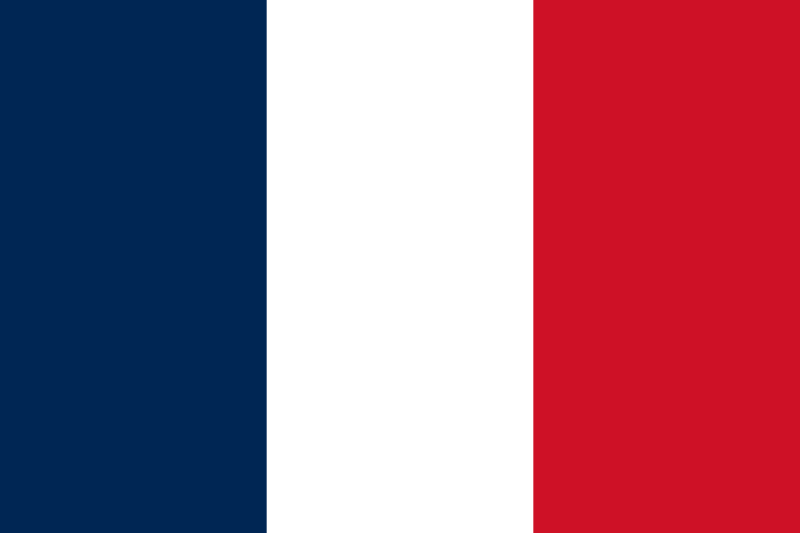

Franciaország az olimpián
Franciaország jelentős részét képezte az újkori olimpia létrehozásának.
Az első olimpiát hagyománytiszteletből rendezték Görögországban, nem pedig Franciaországban.
Franciaország azon kevés országok egyike,
amelyik valamennyi nyári és téli olimpiai játékokon képviseltette magát.
Az ország öt olimpiának volt a házigazdája:
- 1900. évi nyári olimpiai játékok, Párizs.
- 1924. évi téli olimpiai játékok, Chamonix.
- 1924. évi nyári olimpiai játékok, Párizs.
- 1968. évi téli olimpiai játékok, Grenoble.
- 1992. évi téli olimpiai játékok, Albertville.

Érmek:
| Sportág | Arany | Ezüst | Bronz | Összes |
|---|---|---|---|---|
| Atlétika | 14 | 22 | 26 | 62 |
| Evezés | 6 | 14 | 12 | 32 |
| Kajak-kenu | 7 | 8 | 18 | 33 |
| Kerékpározás | 41 | 27 | 22 | 90 |
| Torna | 3 | 10 | 9 | 22 |
| Úszás | 8 | 13 | 19 | 40 |
| Vitorlázás | 12 | 11 | 15 | 38 |
| Vívás | 41 | 40 | 34 | 115 |
A francia sportolók eddig 781 érmet nyertek, ebből 233 arany, 254 ezüst és 294 bronz.
Legeredményesebb sportjai az országnak: a vívás, a kerékpározás, az atlétika, a téli sportágak közül pedig az apesisí.
A Francia Nemzeti Olimpiai és Sportbizottság 1894-ben alakult meg, a NOB még ebben az évben felvette tagjai sorába. A bizottság jelenlegi elnöke Henri Sérandour.
Az érmek a hazai olimpiákon kiemelkedőek szoktak lenni. Például: 1900-ban a nyári olimpián 26 arany, 41 ezüst és 34 bronz született, ez összesen 101 érem.
A Francia Nemzeti Olimpiai és Sportbizottság 1894-ben alakult meg, a NOB még ebben az évben felvette tagjai sorába. A bizottság jelenlegi elnöke Henri Sérandour.
Az érmek a hazai olimpiákon kiemelkedőek szoktak lenni. Például: 1900-ban a nyári olimpián 26 arany, 41 ezüst és 34 bronz született, ez összesen 101 érem.
A XVII. Nyári Paralimpiai Játékok szervezője szintén Párizs lesz, közel 4400 versenyzővel.
A fogyatékossággal élő sportolók legrangosabb eseményére ezúttal is újdonságokkal készülnek,
hiszen a város különböző nevezetes és ikonikus helyszínein is versenyeket rendeznek.
A paralimpiai játékok történetében először fog megtörténni hogy a nyitóünnepséget épületen kívül rendezik meg,
és a sportolók Párizs híres utcáin vonulnak végig.